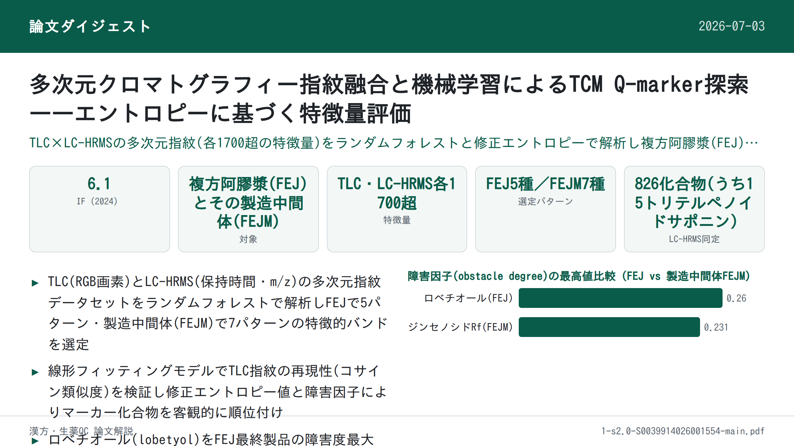

多次元クロマトグラフィー指紋融合と機械学習によるTCM Q-marker探索——エントロピーに基づく特徴量評価

<!-- 方針: ほぼ全訳＋必要に応じた補足。原文構成に沿って訳出。「> 補足:」は訳者注。 -->
書誌情報
- 標題（原題）: Multidimensional chromatographic fingerprint fusion with machine learning: Entropy-based feature evaluation for TCM quality marker discovery
- 著者・所属: Jiamu Ma, Fang Lv, Letian Ying, Yongqi Yang, Yuqing Yang, Xiaodan Qi, Jianling Yao, Yu Cao, Lingzi Wu, Wanzhu Wang, Jiaqian Xing, Xinru Wu, Juan Qin, Yan Zhang*, Gaimei She**（北京中医薬大学 中薬学院／東阿阿膠股份有限公司・山東省阿膠系薬物研究開発重点実験室, 中国）
- 掲載誌・巻号・DOI: Talanta 303 (2026) 129500. https://doi.org/10.1016/j.talanta.2026.129500
- インパクトファクター: 6.1（Talanta, JCR 2024 / Clarivate）
- 受理経過 / ライセンス: 受領 2025-12-05 / 改訂 2026-01-19 / 採録 2026-02-01 / オンライン公開 2026-02-02。© 2026 Elsevier B.V.（テキスト・データマイニング、AI学習等を含む全権利留保）
補足: FEJ = 複方阿膠漿（Fufang E'jiao Jiang）。阿膠（ロバ皮膠）・熟地黄・紅参・党参・山査子から成るTCM方剤で、気血両虚に用いられる。FEJM = FEJの製造工程における中間体（原薬材〜煎じ片〜中間体〜製剤の各段階）。本論文は分析法・データ解析の方法論開発を主題とする研究論文で、薬理効果の検証は範囲外。
要旨（Abstract）
クロマトグラフィーは伝統中国医学（TCM）の品質評価における基盤的手法である。しかし、複数化合物由来のシグナルが重なり干渉し合うクロマトグラフィーデータの複雑さは、化学的に重要な特徴の正確な同定をしばしば妨げる。本研究は、代表的なTCM方剤である複方阿膠漿（Fufang E'jiao Jiang, FEJ）における特徴的化合物の分子由来を追跡するため、多次元クロマトグラフィー指紋分析と機械学習を組み合わせた統合的アプローチを提案した。網羅的な化学プロファイリングに続き、薄層クロマトグラフィー（TLC）およびLC-高分解能質量分析（LC-HRMS）によるクロマトグラフィー指紋から多次元データセットを構築し、各データセットは保持時間・m/z・RGB値に由来する1700超の特徴量を含んだ。ランダムフォレストなどの機械学習アルゴリズムを用いて識別力のある特徴を選択した結果、FEJで5パターン、その中間製品（FEJM）で7パターンが同定され、主にジンセノシドであることが判明した。シミュレーションモデルによりこれらの特徴の重要性がさらに検証され、単一化合物のクロマトグラフィースポットが試料の特徴を効果的に代表しうることが示された。また、修正エントロピー値と障害因子を導入し、選択された特徴を評価・重み付けした。その結果、ロベチオール（lobetyol）とジンセノシドRfが、それぞれFEJおよびその中間体における主要な品質関連マーカーとして認識された。実験的検証により、本手法が重なり合うクロマトグラフィーシグナルを効果的にデコンボリューションし、品質に関連する重要な特徴を同定できることが示され、複雑な系における品質管理のための効率的かつスケーラブルな計算枠組みを提供する。要するに、本戦略は汎用的なデータ構造とモジュール式のアルゴリズム設計に基づいており、特定の専門知識に依存することなく、複雑なクロマトグラフィー指紋を持つあらゆる試料系（薬物・環境・食品試料など）に適用できることが期待される。
1. 序論（Introduction）
クロマトグラフィーはTCM方剤の品質評価に最も広く用いられる手法の一つであり、中でも薄層クロマトグラフィー（TLC）と液体クロマトグラフィー（LC）の組み合わせが最も一般的である[1]。TLCは複雑な化合物混合物の日常的な化学分析、特に低コストで迅速な定性・定量分析が求められる場面で広く使われる。分離が速く操作が容易なことから、TLCは多種の化合物を含む混合物の分離において依然として代替の効かない位置を占めている[2–5]。研究者によっては、TLCは広く用いられるクロマトグラフィー手法の中でも化合物とその代謝物の分析における最も単純な方法であると評する者もいる[6,7]。TLCは移動相の選択幅が広く、試料識別の柔軟性や高い添加容量といった特性を有するため、複雑な化学物質の組成プロファイルを取得可能である[8]。TLCが色によって主要な化学物質のより明確な情報を提供するのに対し、質量分析と結合したLC（LC-HRMS）はほぼ全種類の二次代謝物について詳細な情報を提供する。LC-高分解能質量分析（LC-HRMS）は高感度であり試料適応性の幅が広いため、化学的特徴の包括的かつ効率的な研究や試料間の動的変化のモニタリングを可能にする。しかし、TLCとLC-HRMSの生データの解析は、化学プロファイルのより深い理解を妨げる要因となっている。
TCMの複雑性を探るための全体的かつ定量化可能なアプローチであるクロマトグラフィー指紋は、化学化合物の比較的完全な包括的プロファイルを構築するために本研究に導入された[9,10]。これまでの研究では、天然物の構造[11]、生薬材料の植物起源[12,13]などを分類するモデルが構築されてきた。これらの研究はコンピュータ処理によるTLC指紋の評価を試みているものの、分類結果を左右する特徴量や選定されたマーカー化合物の性能は依然として不明確なままである。化合物プロファイリングは、同一条件下で多数の試料を同時に可視化できるTLC画像によって正確に取得できる[13]。バンドの色とパターンのグレースケールを調べることで、各バンドの化合物組成プロファイリング特徴情報のセットを作成できる。しかし、TLC画像特徴であれLC-HRMSスペクトルデータであれ、主要な課題は、数百〜数千の変数の中から、単なるノイズや無関係な変動ではなく真に品質を示す最も有益な特徴をいかに効果的に選択するかという点に依然として残る。
TLC指紋から意味のある特徴や対応する化合物を特定することは複雑な作業である。クロマトグラム中の微妙な変化は通常定義が難しいためである。ケミインフォマティクスは指紋の解析において重要な役割を果たす[9,10]。ケミインフォマティクス解析の活用は複雑な分析手順の省略を可能にする[14]。一方で、より簡便な機器・最小限の手順に切り替えた際に分析精度が損なわれる可能性がある。機械学習やエントロピーモデルなど他の評価手法を援用することで、この損失を十分に補う可能性が生まれる[15–17]。したがって、TLC指紋分析とケミインフォマティクス、機械学習に基づく特徴選択、およびエントロピーに基づく評価を統合することは、TLCデータを評価し重要な品質マーカーを同定するための強力なアプローチとなり得る。これが本研究の焦点である。
複方阿膠漿（FEJ）は、阿膠（Colla corii Asini）・熟地黄（Radix Rehmanniae Preparata）・紅参・党参（Radix Codonopsis Pilosulae）・山査子（Fructus Crataegi）から構成されるよく知られたTCM方剤である。TCM臨床で広く用いられ、気血両虚に対して処方される[18]。これまでの我々の研究に続き、「スペクトル-効果」関係とネットワーク薬理学を通じて品質マーカーがスクリーニングされ、FEJの品質標準も改善されてきた[2,18]。しかし、FEJの製造工程における主要化合物の伝達性（transitivity）と追跡可能性（traceability）は依然として不明である。サポニンとトリテルペノイドに富むn-ブタノール層は、中国薬局方[19]によりFEJの品質評価における重要画分として認識されている。したがって本研究は、化学物質全体ではなくこの特定画分に焦点を当てた。
我々は、低コストでTCM方剤中の化学物質を評価する重要性に対処するため、TLCとLC-MSのクロマトグラフィー指紋を組み合わせた統合的アプローチを提案した。機械学習支援の特徴選択と計算的評価手法を用いることで、最終FEJ製品だけでなくその中間製品（FEJM）においてもマーカー化合物を識別することを目指した。このアプローチにより、FEJではロベチオリン（lobetyolin）、FEJMではジンセノシドRfが重要化合物として同定され、複雑なTCM方剤の製造工程全体を通じた品質モニタリングとトレーサビリティのための新たな戦略を提供した。さらに、このアプローチは「特徴融合 - 機械学習スクリーニング - エントロピー重み付け選択」というモジュール式の計算パイプラインとして設計されており、医薬品や環境試料など、ドメイン固有の改変を必要とせず多様な複雑系に適応可能である。
2. 材料と方法（Materials and Methods）
2.1 化学物質・材料・試薬
複方阿膠漿（FEJ）15バッチ、FEJの7つの製造工程に由来する中間体21バッチ、および単一生薬を欠く陰性対照試料（N1〜N4）は、いずれも東阿阿膠股份有限公司より提供された。それぞれS1〜S15（FEJ試料）、I1〜I21（FEJ中間体）、N1〜N4（陰性試料）と番号付けされ、ロット番号は表S1に示された。
紅参（121045–200604）および党参（121057–202107）の対照生薬材料、ならびにジンセノシドRg2（111779–200801）、ジンセノシドRb1（110704–202230）、ジンセノシドRb2（111715–202104）、ジンセノシドRd（111818–202104）、ジンセノシドRe（LENA-CAAA）、ジンセノシドRg1（110703–202235）、ジンセノシドRg3（110804–201504）、ジンセノシドRh2（111748–202102）、ジンセノシドRo（111903–202106）の対照標準品は、中国食品薬品検定研究院より入手した。ジンセノシドRc（DST180120-013）、ジンセノシドRb3（DST180913-008）は成都デシテ生物科技有限公司（中国）より、ジンセノシドRh1（AF20050408）、ジンセノシドRg5（AF21051605）、ロベチオール（lobetyol、136171-87-4）は成都アイファ生物科技有限公司（中国）より、ジンセノシドRf（PRF9061942）およびロベチオリン（lobetyolin、PRF9121002）はBiopurify Phytochemicals社（中国）よりそれぞれ入手した。すべての対照標準品の純度は98%超であった。上記以外の他の試薬は市販品を用いた。
2.2 試料調製および標準溶液調製
FEJおよびFEJMのいずれについても、各試料20 mLを水飽和n-ブタノール等量（20 mL）で単回抽出した。n-ブタノール層を分離し、アンモニア溶液20 mLで1回洗浄した後、水飽和n-ブタノール20 mLでさらに3回抽出した。合わせた有機相を蒸発乾固し、得られた乾燥残渣をメタノール1 mLに再溶解して分析用の供試溶液とした。
生薬試料1.0 gを水50 mLで45分間超音波抽出した。定性濾紙で濾過後、抽出液を対照溶液とした。この対照溶液は供試溶液と同様に処理した。対照標準品（ジンセノシドRo、ジンセノシドRe、ジンセノシドRf、ジンセノシドRh1、ジンセノシドRh2）はメタノールに溶解し1 mg/mLとして標準溶液とした。
2.3 TLCクロマトグラフィー条件
10 cm×10 cmのシリカゲルG薄層プレート（青島社製、中国）を使用した。FEJ試料（8 μL）、対照標準溶液（1 μL）、紅参対照生薬（2 μL）、党参対照生薬（8 μL）を定量毛細管でプレート下端から10 mmの位置にスポットした。プレートは、トリクロロメタン：メタノール：1%ギ酸水溶液（6.5：2.5：0.5, v/v）から成る移動相であらかじめ室温で約30分間飽和させた二槽式展開槽に入れ、展開剤がプレート下端から80 mmに達するまで展開した。展開後のプレートを展開槽から取り出し、乾燥後10%硫酸エタノール溶液に浸し、パターンが明瞭な発色を示すまで105 ℃で加熱した。すべてのプレート画像は可視光下で記録した。
2.4 UPLC-QE-MS/MS分析
UPLC分析はVanquish UPLC装置（Thermo Fisher Scientific社, Waltham, MA, USA）を用いて行った。クロマトグラフィー条件は以下の通り。HSS T3カラム（2.1 mm×100 mm, 1.8 μm, Waters社, Milford, MA, USA）を使用し、流速0.3 mL/min、カラム温度35 ℃で分析した。移動相A・Bはそれぞれ0.1%ギ酸水溶液（v/v）とアセトニトリルとした。溶媒プログラムは以下の通り: 0–5 min, 95%–75% A; 5–15 min, 75%–50% A; 15–20 min, 50%–30% A; 20–25 min, 30%–5% A; 25–28 min, 5%–95% A; 28–30 min, 95% A。試料は15 ℃に維持し、注入量は5.0 μLとした。
質量分析はQ Exactive Orbitrap高分解能質量分析計（Waltham, MA, USA）を用いESI正・負イオン化モードで行った。取得条件は以下の通り: スプレー電圧 3.8 kVまたは−3.2 kV、キャピラリー温度 350 ℃、補助ガスヒーター 350 ℃、シースガス 40 Arb、補助ガス 15 Arb、質量範囲 100–1500 Da。フルMS分解能は70000、MS/MS分解能は17500、衝突エネルギーはNCEモードで15/30/45とした。
2.5 データセットのプロファイリングとTLC・LC-HRMS指紋の構築
2.5.1 TLC指紋の構築
TLC画像はスマートフォンカメラで取得した。スマートフォンは固定スタンドに設置し、TLCプレートは水平な台の上に置いた。一貫性を確保するため、すべての画像はフラッシュを使用せず一定の室内照明下で撮影した。前処理を標準化するため、元のTLCプレート画像をAdobe Photoshopに読み込んだ。要約すると、メディアンフィルタを用いて各試料チャンネルの脱彩度・ノイズ除去を行い、等サイズの単一画像とした。ImageJの「Plot Profile」機能により、画像画素のRGB（赤・緑・青）チャンネルからデータを抽出した。RGBチャンネルの強度値を反転し、各チャンネルの強度値を差し引くことで、最大強度値255の「画素強度（pixel-intensity）」行列を作成した。ImageJの「Measure」機能によりパターンのグレー値を決定すると同時にRf値を算出した。生のTLCプレート画像はまずグレースケールに変換した。各画素位置の相対グレースケール強度は、そのレーン全体（またはプレート全体）にわたるグレースケール強度の合計に対する絶対強度の正規化により算出した。この処理は式(1)として表され、各画素の強度が化学プロファイル全体への相対的寄与を表す正規化された2次元データセットを生成する。これにより「グレー値-Rf値」行列が得られた。
$$I_{rel} = \sum \frac{I_{pixel}}{I_{total}} \quad (1)$$
ここで、$I_{rel}$は個々の画素の相対グレースケール強度、$I_{pixel}$は算出対象画素の絶対グレースケール強度、$I_{total}$は全画素の絶対グレースケール強度の合計である。
2.5.2 LC-HRMS指紋の構築
すべての生ファイルは.mzML形式に変換し、MSDIAL（v 5.4.24）を用いてMS/MSレベルの全スペクトルを抽出した。スペクトルの強度・前駆イオンm/z・保持時間も併せて保存した。保持時間0.5分未満またはMS/MSスペクトルを欠くスペクトルは除去した。スペクトルは、社内データ・対照標準品、およびMSFinder（v 3.61）による計算に基づきアノテーションを行い、主要フラグメントを記録した。保持時間は絶対保持時間をそれぞれの最大保持時間で除して正規化した。フラグメント強度は各スペクトルの各ピークについて、そのピーク強度をスペクトル全強度で除することで正規化した。
LC-HRMS指紋は解析のために2つの相補的データセットへと処理された。第一に、各試料について「保持時間 - 総イオン強度」行列を構築した。この行列同士のコサイン類似度を算出し、全体プロファイルの類似性を評価するとともに、試料間で有意な分散を示す保持時間領域（TLC画像行列解析と同様の手法）を特定した。第二に、特定された差異領域について「相対保持時間 - 前駆イオンm/z」リストを抽出し、分散に寄与する特定の化合物のアノテーションを容易にした。
コサイン類似度による類似性評価は、対照マップを基準として実施した。式(2)は以下の通りである。
$$S = \frac{\sum_{i=1}^{2} x_i y_i}{\sqrt{\sum_{i=1}^{2} x_i^2}\ \sqrt{\sum_{i=1}^{2} y_i^2}} \quad (2)$$
ここで、$x_i$は画素値、$y_i$は対応する画素の強度を表す。
2.6 意味のある特徴を選択するための計算モデル
2.6.1 ケミインフォマティクス解析
7つの異なる製造工程に由来するFEJ15バッチおよびFEJM7バッチを、検証のために組み入れた。TLCおよびLC-HRMS両指紋を評価し、これらバッチ間の類似性・差異を解明するためにケミインフォマティクス解析を用いた。主成分分析（PCA）と階層的クラスタリング解析（HCA）を併用してFEJおよびその中間体を評価した。解析はOrigin 2024bで行った。
2.6.2 特徴選択
TLCおよびLC-HRMS指紋から識別力のある特徴を選択するため、ランダムフォレスト（RF）分類器を実装した。解析はPython（version 3.9）とscikit-learn機械学習ライブラリ（version 1.2）を用いて行った。RFモデルは以下のハイパーパラメータで構成した: 決定木数1000本、各木の最大深さはNone（全葉が純粋になるまでノードを展開）、各ノードの最良分割で考慮する特徴数は「sqrt」（全特徴数の平方根）。分割の質の評価にはGini不純度基準を用いた。その他のパラメータはscikit-learn version 1.2の既定値を用いた。頑健な識別的特徴を同定するため、二段階の基準を適用した。まず、PLS-DAモデルから変数重要度（VIPスコア）が1.0を超える特徴を選択した[20,21]。次に、これら候補特徴の重要性をRFモデルにおけるGini係数平均減少量により検証し、両独立アルゴリズムで一貫して上位に位置づけられることを確認した。
2.6.3 選択された特徴によるTLC指紋シミュレーションのフィッティングモデル
選択された特徴がTLC指紋プロファイル全体に対して持つ寄与を定量的に評価するため、線形フィッティングモデルを構築した。このモデルは、ある位置におけるクロマトグラフィーシグナルの強度が対応する化合物の濃度に比例するという原理に基づく。任意の点における累積指紋F(p̃)は、全個別成分からの寄与の総和としてモデル化できる。式は以下の通りである。
$$F(\tilde{p}) = \sum_i C_i \times I_i(\tilde{p}) \quad (3)$$
ここで、p̃はTLC指紋内の空間座標（例えば相対保持係数Rf）、$C_i$は化合物iの濃度、$I_i(\tilde{p})$は化合物iの強度であり、単位濃度における化合物iの純粋標準品の標準化強度プロファイルを表す。このプロファイルは、化合物の化学的性質と固定相との相互作用によって決まる特徴的な空間位置とTLCプレート上でのバンド形状を規定する。
2.7 修正エントロピー値と障害因子による特徴的特徴の評価
クロマトグラフィー指紋から選択された特徴を定量的に評価し、FEJまたはFEJMの化学プロファイル全体に対するそれらの相対的寄与を評価するため、修正結合エントロピーモデルを用いた。このモデルは各特徴のエントロピー重みを算出することで機能し、これは各特徴の情報的重要性の客観的指標として機能する。エントロピーが低い特徴（すなわち試料間でより一貫性がありランダム性の低い信号分布を示す特徴）はより安定していると見なされ、品質マーカーとしての可能性がより高いことを示すより高い重みが割り当てられる。プロセスはまずデータ前処理から始まり、各特徴のグレースケール強度を抽出・正規化した。i番目の特徴について、全試料にわたるその強度値は式(4)により相対存在量を表す確率的値に変換された。続いて、式(5)を用いて各特徴の情報エントロピー（Eᵢ）を算出し、試料集合にわたるその強度分布の無秩序性・ランダム性を定量化した（Eᵢが高いほど変動が大きく安定性が低いことを示す）。最後に、式(6)よりエントロピー重み（Wᵢ）を導出し、エントロピーを重み係数に変換した。
$$p_i = \frac{x_i}{\sum x_i} \quad (4)$$
$$E_i = -\frac{\sum_{i=1}^{n} p_i \ln(p_i)}{\ln(n)} \quad (5)$$
$$W_i = \frac{1 - E_i}{\sum (1 - E_i)} \quad (6)$$
ここで、iはi番目の特徴を表し、$x_i$は絶対強度である。この算出により、エントロピー（Eᵢ）がより低い（より安定した）特徴には最大エントロピー状態からの乖離度を表すより高い重み（Wᵢ）が割り当てられる。式(6)分母の総和は全特徴にわたるものであり、重みの合計を1に正規化する。この枠組みでは、エントロピー重みがより高い特徴は、その一貫した信号が製品品質のより信頼性の高い指標となるため、潜在的な品質マーカーとして優先された[22]。
指紋プロファイル中の意味あるパターンの情報エントロピーを包括的に評価するため、以下の算出が行われた。
$$g_i = 1 - W_i \quad (7)$$
$$R_i = \frac{W_i}{\sum_{i=1}^{n} W_i} \quad (8)$$
$$C_i = \sum_{i=1}^{n} R_i X_i \quad (9)$$
ここで、$g_i$は情報効用値、$R_i$は相関TLCパターンの重み、$C_i$は意味ある特徴の結合効用値を表す。
障害因子診断モデルは、FEJ試料およびFEJ中間体の品質に対する各意味ある化合物の障害度を算出するために用いられた。障害因子診断モデルの式は以下の通りである。
$$O_{ij} = \frac{\sum_{j=1}^{n} Co_{ij} \cdot De_{ij}}{\sum_{i=1}^{m} Co_{ij} \cdot De_{ij}} \quad (10)$$
ここで、$O_{ij}$はj番目のバッチにおけるi番目の化合物の障害度である。$Co_{ij}$は因子寄与度であり、本研究では等しい重みが割り当てられた。$De_{ij}$は偏差の程度を表し、目標（望ましい）値と各化合物の実測値との差として算出される。本研究では各化合物の目標値は正規化最大値（すなわち1）と定義され、したがって$De_{ij}$は各指標の正規化値の補数として表される。
補足: 式(2)・(10)の総和記号の添字表記は原文のPDF抽出テキストで一部乱れがあり（2段組レイアウトの抽出起因）、本訳では文脈上最も整合的な形（原論文の標準的な結合エントロピー重み法・障害因子診断モデルの一般形）に沿って再構成した。数値・結論そのものの捏造は行っていない。厳密な添字・下付き表記は原文PDFの数式画像を参照されたい。
3. 結果と考察（Results and Discussion）
3.1 TLCおよびLC-HRMS指紋のプロファイリング
3.1.1 TLCプロファイリング解析
FEJの確立されたTLC条件は、中国薬局方収載法と比較して改変されたものであった。この方法は、同一の試料調製法・TLC条件を用いて単一プレート上で2種の生薬（紅参・党参片）を同時に識別するという目標を達成し、識別効率を大幅に改善した。従来の研究と比較して、本法は2生薬由来のより多くの対照化合物を参照しており、価値ある化合物を識別できる可能性を高めた[2]。FEJおよびFEJM試料の確立されたTLC法は、特異性・再現性・耐久性の評価によりバリデーションされた（Fig. S1）。方法バリデーション後、FEJの異なるバッチのTLCプレート解析により対照溶液との比較で6化合物が同定された（Fig. S2A）。紅参および党参の主要化合物は、対照生薬試料に従いFEJ試料中にも同様に認められた。FEJ試料について、バンドの大部分は本質的に同一であったが、色の濃淡に若干のばらつきが認められ、ジンセノシドRo・ジンセノシドRe・ジンセノシドRfなどの化合物含量が大きく変動していたことが示唆された。「生薬材料 - 煎じ片 - 中間体 - 製剤」のTLCプレートにおいても、バンドは同様の傾向を示した（Fig. S2B）。FEJ製造工程の中でバンドが大きく変化することは明らかであり、化学プロファイルが著しい変化を経ていることを示していた。対照標準品および陰性対照試料と比較して、ジンセノシド（例：ジンセノシドRg1・Rg5）は顕著に富化されていた。対照的に、熟地黄または山査子由来と推定される特定化合物の含量は減少していた。しかしながら、経験と対照標準品の種類が従来のTLC分析法における厳しい制約となっていることは依然として課題であった。このことは、試料中の重要分子を精密に同定することを困難にし、試料品質の評価・管理を困難にしていた。
3.1.2 LC-HRMSプロファイリング解析
FEJおよびFEJMの化合物プロファイリングは、フルスキャンモードでのUPLC-HRMSにより調査された。総イオンクロマトグラム（TIC、Fig. 1D・E）に示される通り、よく分離されたピークが観察された。本研究では、18種のジンセノシド、ステロイド、脂肪酸、フラボノイドおよびその他の化学種を含む合計826化合物が特性化された。保持時間・分子量・タンデム質量スペクトルを対照標準品と比較することで、15種のトリテルペノイドサポニンが同定された。化合物リストは表S2に示された。
ここでは、FEJの代表的な主要化学種であるプロトパナキサトリオール（PPT）型ジンセノシドとプロトパナキサジオール（PPD）型ジンセノシドを例として、化合物特性化の過程を示す。ジンセノシドは主にC-3位（±C-20位）に糖部を有するPPD型と、C-6位（±C-20位）に糖部を有するPPT型の2大群に分類されることが判明した。
化合物#341（保持時間10.74分溶出）と化合物#571（保持時間18.36分溶出）は、いずれもm/z 799.48に同一の前駆イオン質量を示した。両化合物はm/z 637.4335にフラグメントイオンを生じ、これはグルコース単位1個の脱離（[M-H-Glu]⁻）に対応した。続いてm/z 475.3732に別のフラグメントイオンが観察され、これはグルコース単位2個目の脱離（[M-H-2Glu]⁻）に対応した。これらイオン間の約162 Daの質量差は、2個のヘキソース残基の逐次脱離、すなわちジグリコシド構造を確実に示すものであった。提案されたフラグメンテーション経路に従い社内ライブラリ中の候補構造をスクリーニングした結果、化合物#341はジンセノシドRg1またはジンセノシドRfのいずれかと同定された。両者のC logP値を比較したところ、ジンセノシドRg1は2.292、ジンセノシドRfは3.097であり、ジンセノシドRfの方がより長い保持時間を示すことが示された。したがって、化合物#341はジンセノシドRg1、化合物#571はジンセノシドRfと同定された。
化合物#366は保持時間11.39分に溶出し、前駆イオン質量はm/z 1107.5958であった。m/z 375.2913の生成イオンはC-20位のオレフィン鎖の解離により形成される特徴的なフラグメントイオンであり、本化合物がPPD型ジンセノシドに属する可能性を示していた。さらに、m/z 945.6276・m/z 783.4916・m/z 621.4384のフラグメントは、前駆イオンからグルコース置換基1個が逐次解離することで形成されたものであった。したがって化合物#366はジンセノシドRb1と同定された。
総じて、FEJとFEJMの化合物組成にはわずかな違いがあり、これは製造工程中の化合物変換に起因する可能性がある。UPLC-HRMS解析は二次代謝物の同定に十分な情報を提供できた。
Fig. 1（原文図・本解説には未収録。原文参照）: TLCおよびLC-HRMS指紋の構築とプロファイリング。(A) TLC指紋構築のワークフロー。(B) RGBチャンネルから見たFEJのTLC指紋。(C) RGBチャンネルから見たFEJMのTLC指紋。(D, E) 正・負イオンモードで得られたFEJ(D)およびFEJM(E)のベースピーククロマトグラム(BPC)。強度はクロマトグラフィーラン全体のベースピークに対して正規化。(F) 正規化された2次元TLC指紋データの散布図（各点は画素、x座標は相対保持係数(Rf)、y座標は相対グレースケール強度。最大相対強度0.22はプロファイル中最も濃いバンドの正規化値に対応）。(G) LC-HRMS指紋の「相対RT-m/z」データセット。
3.2 複数指紋データセットの構築と評価
生のTLC画像は従来の解析対象であるが、デジタル解析なしにはぼやけたパターンを識別することは困難である。さらに、パターンの色の濃淡差に由来するTLCの定量的性質も、TLC画像から価値ある化合物を同定する難度を増大させる。本研究では、確立された手法[12]に準拠して修正したRGBチャンネルの信号を個別に抽出することにより、TLC画像を信号スペクトルへと変換した。画素強度行列とグレー値-Rf値行列は、それぞれ異なる分析目的を果たした。前者はクロマトグラム画像全体の完全な高解像度RGB情報を捉えたものであり、その3次元（FEJで3×15×2180、FEJMで3×14×2180）はそれぞれRGBカラーチャンネル・試料数・展開方向に沿った総画素数を表し、大域的なパターン認識と類似性解析に用いられた。対照的に、グレー値-Rf値行列は特定の化学バンドの定量評価のために設計された凝縮特徴行列であり、画像をグレースケールに変換し、あらかじめ定めたRf位置における平均グレー値を抽出することで生成された。その結果、次元（FEJで1×15×12、FEJMで1×14×12）は単一データチャンネル（グレー値）・試料数・追跡バンド数（Rfポイント）に対応した。TLC画像は画素・強度・グレー値の3要素から構成され、これらが連動して元のTLC画像を検討可能なデータセットへと変換する。複雑な化合物混合物の分子由来を明らかにするため、TLCプレート中の価値ある化合物を同定する手法が、指紋構築の開始と共に提案された。Fig. 1Aに示すワークフローの通りTLC指紋を構築し、FEJおよびFEJMのTLC指紋をFig. 1B・C＆Fに示した。さらに、LC-HRMS指紋はTLC指紋のワークフローに準じ、より大きな化学空間の視点からの並行的参照となるよう若干の調整を加えて構築した。予想通り、LC-HRMS指紋の方がより多くの化合物が検出された（Fig. 1D・E＆G）。
TLC指紋データセット（「画素強度」行列および「グレー値-Rf値」行列）は、前処理（各チャンネルの脱彩度・ノイズ除去、行列変換）後に構築された。FEJ試料の「画素強度」行列では、データセットは1781×19の特徴量から構成された。同時に「グレー値-Rf値」行列には2181×22の特徴量があった。異なるバッチのFEJの主要な特性は目視では概ね同一に見えたが、一部のピーク（TLCパターン）は試料間でわずかな差異を有することが明らかであった（Fig. S3 A-C）。化学物質の組成のみならず主要化合物の相対含量も指紋プロファイリングに影響した。この結果は、製品の安定した高品質を担保するためFEJ中の価値ある化合物を管理する必要性を示していた。FEJMのTLC指紋については、FEJ試料と比較して製造工程中により多くの化合物が大きく変化していた（Fig. S3 D-F）。これは製造工程が化学組成と化合物含量を変化させたことを示す。報告によれば、ジンセノシドの化学変換は通常抽出過程およびpHの変化中に生じる[23,24]。サポニンおよびトリテルペン類の含量は抽出過程によっても増減しうる。ここで、特徴的代謝物の同定・アノテーションは試料変動に関する重要な情報を提供し、品質評価のエビデンスを与えた。LC-HRMS指紋（Fig. 1D・E）については、ピーク差異はより均等に分布しており、TLC指紋における比較的集中したピーク差異の分布とは対照的であった。LC-HRMSが分離能に優れ、極性の類似した化合物もTLC指紋とは異なり容易に区別できることは理解しやすい。一方、TLC指紋は既知化合物を直感的に同定できる代替不能な利点を有し、品質評価にかかる作業量と時間を削減する。言い換えれば、特徴化合物が明らかになれば、TLC指紋は化合物混合物の品質を評価する最も簡便な分析手法の一つである。
補足: 原文中の行列次元（画素強度行列 3×15×2180等 と 特徴量1781×19／2181×22等）は、記載箇所によりやや異なる数値表現が用いられている（原文ママ。2段組PDFのテキスト抽出に起因する配置の乱れの可能性があり、正確な対応関係は原文の図表を参照されたい）。
原負イオンモードで検出されるバッチ間差異が主であった。トリテルペノイドサポニンはFEJおよびその中間体の主要な化学種であり、紅参および党参由来のこれら化合物がn-ブタノール画分に富化されていたためである。このことから本研究はこの化学種に焦点を当てた。結論として、これらの結果はTLC指紋のプロファイリング結果と一致し、試料間の化学組成・相対含量の差異を裏付けた。TLC指紋とLC-HRMS指紋の類似性を比較すると、LC-HRMS指紋の結果はより高い類似性を示したが、TLC指紋の結果と有意な差はなかった。これはTLC指紋による試料プロファイリングの実行可能性を示すものであった。
ケミインフォマティクス解析はクロマトグラフィー指紋の評価に適した手法として認識されている。分析対象分離に必要な簡略化された試料調製手順に起因する非理想的な分析シグナルを効果的に処理できる[14]。したがって、TLC指紋の構築に続き、複雑な物理的操作への依存を軽減・評価するためPCAとHCAを用いた。「画素強度」行列を入力として用い、いくつかの主成分に分解した。文献で報告されている通り、生薬の異なるバッチ・煎じ工程その他の製造要因が化合物の組成プロファイルに共同で影響する[25,26]。本研究では、FEJおよびその中間体のTLC指紋のPCAとHCAにより、特にバッチ間の化学組成や最終製品（FEJ）とその中間体（FEJM）との間で顕著な差異が明らかになった。TLC指紋において党参片とFEJMの方が紅参よりも類似性が高い点は注目に値する。これはトリテルペノイドサポニンの製造工程中の動的変化に起因する可能性があり[26]、FEJを適切に評価するにはより紅参に注目すべきことが示唆される。FEJ試料の多様性・共通性とその伝達過程を理解するため、PCA解析とHCA解析を適用した。Fig. 2に示す通り、FEJ試料はR・G・Bの各チャンネルで3群に分類された。Rチャンネルの PCA解析では、試料はその強度・相対画素（対応する化学組成の含量にも関連）に応じてPC1（説明分散48.82%）・PC2（説明分散23.42%）に沿った傾向を示した。GおよびBチャンネルの結果については、PC1がそれぞれ45.12%・47.90%、PC2が29.89%・28.10%であった。HCA解析でも同様の分類結果が得られた（Fig. 2D–F）。RGBチャンネル間で異なる分類結果が観察され、RチャンネルとBチャンネルが同一の分類結果を示したことは、化合物組成がR・Bチャンネルで同じ色特徴を有することを示していた。さらに、S6・S9・S10を除き、大半のFEJ試料はその色特徴と強度の違いに基づいて識別することが困難であった。FEJ試料での不安定な分類とは異なり、FEJM試料のRGBチャンネルでは一貫した分類結果が観察され（Fig. S4）、製造工程が試料に与える影響が大きいことが示された。LC-HRMS指紋のPCAおよびHCA解析の結果はTLC指紋の結果と類似していたが、化合物組成に関するより詳細な情報が分類結果にわずかに影響を与える可能性があった（Fig. S5）。TLC指紋解析の結果と一致し、負イオンモードの分類結果は化学組成の変化により影響を受けやすかった。また、正・負イオンモードの分類結果が同一であったことから、FEJM試料に有意な差異があるという同じ結果が得られた。総じて、FEJ試料とその伝達工程のTLC指紋・LC-HRMS指紋に対するケミインフォマティクス解析は、パターンが変動することを示し、化合物の含量がFEJ製品の品質と製造効率に影響しうることを示した。その場合、主要パターンないし化合物の同定はFEJの品質管理・評価にとって重要であった。
意味あるパターンないし化合物を同定するため、TLC指紋の「画素強度」データセットに対して試料間差異評価のための類似性評価を実施した。結果は、FEJのTLC指紋のR・G・Bチャンネルにおける試料クロマトグラムと対照クロマトグラムとの類似性が0.9551〜0.9981の範囲にあることを示し（表S2-S4）、異なるバッチのFEJが高い類似性と安定した工程を有することを示した。「生薬材料 - 煎じ片 - 中間体 - 製剤」のTLC指紋では、R・G・Bチャンネルと対照スペクトルとの類似性は0.8383〜0.9962の範囲であった（表S5-S7）。RGBチャンネル間の傾向と同様、RチャンネルとGチャンネルの類似性がより高く、異なる化合物がFEJおよびその中間体の試料に影響を与えていること、これらが青色の呈色を有することを示した。天然物の呈色は赤色または青色になりやすいことが報告されている[11]。LC-HRMS指紋の結果では、FEJ試料の正・負イオンモードの類似性は0.9733〜0.9990の範囲にあり（表S8-S9）、FEJ中間体の類似性は0.8627〜0.9975の範囲であった（表S10-S11）。負イオンモードは正イオンモードと比較してより低い類似性値を示し、バッチ間の差異は主に負イオンモードで検出された。
Fig. 2（原文図・本解説には未収録。原文参照）: TLC指紋のケミインフォマティクス解析。(A) Rチャンネルの FEJ試料PCA解析、(B) Gチャンネルの同、(C) Bチャンネルの同。楕円境界付近に位置する試料（例: S5・S8・S13）は中間的な化学プロファイルを示す例であり、分析手法により群分けが変動しうる。(D)〜(F) それぞれR・G・BチャンネルのFEJ試料HCA解析。3群は階層クラスタリングデンドログラムの主要な分岐構造に基づいて定義された。
3.3 TLC指紋とLC-HRMS指紋プロファイリングの特徴選択
TLC指紋のケミインフォマティクスによる基礎評価の後、特徴的化合物を見出すためランダムフォレストによりTLC指紋シグナルの特徴選択を進めた。ランダムフォレストは高い安定性と強い汎化性能を有し分類によく用いられる。また予測因子と結果の関係を解釈する内部検定を実行できる[27,28]。これらの特性により信頼性の高い特徴選択結果が得られる。我々の先行研究では、FEJから5特徴パターン、FEJM試料から7特徴パターンが選択された。その後、対照溶液との比較により、FEJでは合計7化合物（ジンセノシドRg1・Rg2・Rg3の混合パターンを含む）、FEJMでは9化合物（同じ混合パターンを含む）が同定された。ランダムフォレストは、RGBチャンネルの「画素強度」行列ならびにフラグメント強度・相対保持時間に基づき、TLCプロファイルおよびLC-HRMSの特徴に顕著な影響を持つ特徴を選択するために適用された。Fig. 3に示す通り、FEJ試料のTLC指紋から5つの画素バンド、LC-HRMS指紋の負イオンモードから6バンド、正イオンモードから4バンドが選択された。Fig. 3Aでは、No.1〜No.5のバンドは対照標準品との比較によりそれぞれジンセノシドRe、ジンセノシドRf、混合スポット、ジンセノシドRh1、ロベチオールと同定された。このうち混合スポットは、対照標準品との共移動により少なくともジンセノシドRg1・Rg2・Rg3を含むことが同定された。ただし、TLC指紋の選択は依然として明瞭な形態と最適な分離特性を持つ主要スポットを優先しており、低存在量または顕著なバンドテーリングを示す微量成分はしばしば識別困難であり、解析から除外された。TLC指紋と比較して、LC-HRMS指紋はバッチ間差異を引き起こす価値ある化合物についてより詳細な情報を持っていた。Fig. 3B＆Cに示す結果の通り、LC-HRMS指紋の選択された特徴は、相対RT約0.45〜0.71（正イオンモード）および約0.15〜0.38（負イオンモード）でRF重要度が高いより詳細な情報を有していた。ジンセノシドRb1、ノトジンセノシドR2、ロベチオリンなどの化合物がこの保持時間区間の主要な化合物種である。LC-HRMS指紋の選択結果は、FEJおよびFEJMの主要化学種に関する既存の知見と正確に一致していた。これは主要化学種への着目が化合物混合物の品質評価にとって優れた方法であることを示している。しかし、FEJ品質への顕著な寄与を持つ特定化合物は依然として不明であり、さらなる解析が必要であった。
FEJM試料の特徴選択（Fig. S6）についても、ほぼ同様の結果が得られた。わずかな違いとして、FEJMのTLC指紋からは7特徴バンドが選択され、それぞれジンセノシドRe、ジンセノシドRf、混合化合物、ロベチオリン、ジンセノシドRh1、ジンセノシドRh2、ロベチオールと同定された。より多くの化合物が選択されたことは、伝達過程が試料間差異に関するより多くの情報を有すること、また試料間差異がFEJ試料と比べてより大きいことを示している。FEJMのLC-HRMS指紋の選択でも、類似の範囲が得られた。ただし、RF重要度値はFEJ試料ほど有意に高い値を示すものではなかった。これはFEJMの組成・含量が変動していることに起因する可能性がある。総じて、伝達過程においてはロベチオリンとジンセノシドRh2がFEJ試料と異なる特徴化合物であった。
Fig. 3（原文図・本解説には未収録。原文参照）: RF（ランダムフォレスト）に基づく特徴選択（前処理データから定量的に抽出した特徴を使用）。(A) 特徴抽出に用いた代表的TLCトラック(S15)の定量プロファイル（背景補正・正規化されたRGB各チャンネルの脱コンボリューション強度を画素距離に対してプロット。ピーク1〜5は対照標準品との比較で表示化合物として同定）。(B, C) LC-HRMSの(B)負イオン・(C)正イオンモードの選択された特徴（相対強度と対応するRF重要度スコア）。
3.4 選択された特徴に基づくTLC指紋のシミュレーション
選択された特徴が試料全体の特性に対して持つ特徴とその重要性を把握するため、特徴のみが存在する場合のTLC指紋プロファイルの変化を記述するシミュレーションモデルを構築した[29]。このシミュレーションモデルは、スペクトル指紋を主要化合物由来のスペクトル寄与の線形結合として定式化し、異なる試料間の化学組成の変化を明らかにするとともに、スペクトルの差異を特定化合物の濃度変化に直接結びつける。FEJ試料の類似性評価は、TLC指紋またはLC-HRMS指紋の構築で用いたのと同様のコサイン類似度法に基づき、R・G・Bの各チャンネルから個別に算出した（表S12-S17）。シミュレーションTLC指紋と実験TLC指紋との類似性は、R・G・Bチャンネルでそれぞれ0.9440〜0.9950、0.8836〜0.9827、0.8590〜0.9856の範囲であった。またこれらシミュレーションTLC指紋同士の類似性は、R・G・Bチャンネルでそれぞれ0.9931〜0.9999、0.9738〜0.9999、0.9746〜0.9999の範囲であった。FEJM試料では、実験試料との比較でR・G・Bチャンネルの類似性はそれぞれ0.9106〜0.9997、0.8850〜0.9994、0.8778〜0.9956であった。またそれら自身の間の類似性はR・G・Bチャンネルでそれぞれ0.9733〜0.9999、0.9393〜0.9999、0.9616〜0.9999であった。これらの結果は、Rチャンネルでより良好なシミュレーションが得られること、また含量が高く点状形成特性の良好なスポットで優れたシミュレーション性能が観察されたことを示した。これはTLCの性質上、明確に区別できるスポットのみが同定可能であることに起因する可能性がある。一方でこのことは、化学物質を完全に特性化するにはより多くの相条件が必要であることも示唆した。本研究ではn-ブチルアルコール相のFEJ物質の主要化学種がトリテルペノイドであったため、この化学種に焦点を当てて研究を進めた。
TLC指紋（強度-画素）の単純なシミュレーションモデルを得た上で、選択された特徴の性能は容易に得られた。Fig. 4に示す結果の通り、FEJM試料はより良好なシミュレーション性能を示した。予想通り、混合スポットは不良なシミュレーション性能を示し、混合スポットがジンセノシドRg1・Rg2・Rg3のみならず、リグストロシド、ノトジンセノシドR2など類似の極性を持つ他の化合物も含んでいたことを示した。さらに、PCAおよびHCA解析における分類結果は実験結果とほぼ同一であり、正確な特徴選択法とシミュレーション法の信頼性を示した。
結論として、確立されたシミュレーション法の結果は、特徴によってTLC指紋全体を代替する手法が実行可能であることを証明した。
Fig. 4（原文図・本解説には未収録。原文参照）: シミュレーションTLC指紋の性能。(A) 混合標準溶液のTLC指紋(RGBチャンネル)。(B)〜(D) それぞれR・G・Bチャンネルにおけるシミュレーション TLC指紋と実験TLC指紋の比較。(E) RチャンネルのシミュレーションTLC指紋のPCA解析。(F) RチャンネルのシミュレーションTLC指紋のHCA解析。
3.5 修正エントロピー法に基づく価値ある化合物の評価
FEJおよび伝達過程における特徴化合物の寄与を評価・理解するため、結合エントロピーモデルおよび閾値を確立した。TLC指紋の「グレー値-Rf値」行列を用いて情報エントロピーと結合エントロピーを算出した。
情報エントロピーは不確実性の尺度である。不確実性が大きいほど、より無秩序である。TLC指紋の解析により試料間にかなりの不均一性が認められた。プロファイルは化学的特徴の数・強度の両方において明確な差異を示し、試料間変動が高いことを示した。FEJ試料の平均情報エントロピー値は1.6072、伝達過程の値は1.5983であった。FEJ試料および伝達過程の平均情報エントロピー値は、両系のいずれもが複雑であることを示した。情報エントロピーはまた、FEJ試料における5つの主要化合物の重要性がほぼ同一であることを示した。一方、伝達過程における7つの主要化合物は多様な情報エントロピー値を示した。総じて、ロベチオール、ジンセノシドRh1、およびジンセノシドRg1・Rg2・Rg3から成る混合パターンが、FEJ試料と伝達過程の双方における上位の最も価値ある化合物であった（Fig. 5A）。しかし、主要化合物の近接した情報エントロピー値は依然として価値ある化合物の識別を困難にした。そこで、主要化合物を正確に順位付けする評価法として結合エントロピーが提案された。化合物の総結合エントロピー値の算出結果（Fig. 5B）に示される通り、情報エントロピー値で同定された主要化合物とは別に、ジンセノシドRfがFEJ試料・伝達過程双方にとってもう一つの価値ある化合物と考えられた。さらに、FEJおよび伝達過程における各試料の結合エントロピーは、試料間の詳細な差異を示した（Fig. 5C〜D）。伝達過程と比較して、FEJ試料はより分散した結合エントロピーを示した。これはFEJ試料のTLCプロファイルが伝達過程よりも複雑であるという同じ結論に達するものであった。
障害度は修正エントロピー値から得られるもう一つの値であり、システム全体に対するそれらの寄与度に関する情報を提供する。具体的には、閾値が1に近いほどシステムにおいてより重要な役割を果たすことを意味し、0に近いほどファジィシステムへの寄与が小さいことを意味する。Fig. 5B＆E-Fに示す結果の通り、ロベチオールはFEJ試料において最高の障害度0.260を示し、ジンセノシドRfはFEJM試料において障害度0.231を示した。これは、それぞれFEJおよびFEJM試料において大きな寄与を持つ特徴化合物であることを示していた。また、この結果は修正エントロピー評価の結果と同一であった。TLCプロファイル全体、試料の結合エントロピー値の分布・分散を要約すると、ロベチオール、ジンセノシドRh1、ジンセノシドRg1・Rg2・Rg3（混合パターン）はFEJに大きな影響を持つFEJ試料のマーカー化合物として同定された。一方、ジンセノシドRg1・Rg2・Rg3（混合スポット）、ジンセノシドRf、ジンセノシドRh1は伝達過程のマーカーであった。この結果は、党参由来の化合物が製品伝達過程において安定であることを示しており、HCA解析結果と一致していた。
マーカー化合物を同定する上で、これら差異化合物の寄与度を解明することは依然として鍵となる課題であった。エントロピーは動的複雑性を測る典型的な概念であり、ファジィシステムの評価に導入されてきた[30]。本研究では、情報エントロピーと結合エントロピーの両方を用いて主要化合物を評価した。情報エントロピーは微視的なカオスの直接的な測定であり、信号処理における重要な手法の一つとして認識されている[31]。その目的は、時系列データや画像データにも適用されてきた確率変数の情報量または固有の不確実性を定量化することである[16]。情報エントロピーと信号強度の関連性は近年の展望において考察されており[16,34]、化合物の情報エントロピーが小さいほど一貫した信号強度分布を持つ可能性が高いとされる。言い換えれば、マーカー化合物、すなわち製造工程による影響が大きい化合物ほど、より大きな情報エントロピーを持つ。したがって、マーカー化合物を重み付けするために結合エントロピーが提案された。結果として、ジンセノシドRh1と、ジンセノシドRg1・Rg2・Rg3から成る顕著な混合パターンが、FEJ試料と伝達過程の双方にとっての品質マーカーとして同定された。一方、ロベチオールはFEJ試料特有のマーカー、ジンセノシドRfは伝達過程特有のマーカーであった。ジンセノシドは人参および人参含有TCM方剤の主要な品質管理指標として用いられる[35]。これらの化合物は製造工程中に変換されやすいため、ジンセノシドの変化を重視することはより良い製品利用を可能にする可能性がある[36,37]。伝達過程におけるマーカー化合物の同定は、紅参が調製過程中の影響をより受けやすいというHCAクラスタリング結果も裏付けた。さらに、FEJ試料および伝達過程のマーカー化合物は、HPLC指紋など高コストな検出法と相互補完的であった[2,18]。
Fig. 5（原文図・本解説には未収録。原文参照）: 意味ある特徴の包括的評価。(A) FEJ試料およびFEJM試料の情報エントロピーと修正エントロピー値。(B) FEJ試料における価値ある化合物の障害因子。(C) FEJ試料に対する価値ある化合物の結合エントロピー。(D) FEJM試料に対する価値ある化合物の結合エントロピー。(E) FEJ試料における価値ある化合物の平均障害度。(F) FEJM試料における価値ある化合物の平均障害度。
4. 結論（Conclusion）
クロマトグラフィーは、伝統中国医学（TCM）のような複雑な系の品質評価における基盤的手法である。本研究は、主として視覚的比較と対照Rf値に依存する古典的なTLC法を超え、マルチチャンネル指紋分析とケミインフォマティクス・エントロピー計算を組み合わせた統合的分析アプローチを確立した。この戦略は、TLCとLC-HRMSの両データから、重なり合うシグナルの解像度とデコンボリューション能力を高めた形で、差異のある品質関連マーカー化合物の正確な同定を可能にする。
FEJに適用した結果、本手法は最終製品とその製造工程の双方に共通するマーカーとしてジンセノシド（Rh1・Rg1・Rg2・Rg3を含む）を正しく認識した。さらに、ロベチオリンはFEJ試料に特有のマーカーとして同定され、ジンセノシドRfは製造中間段階に特有であった。現行の研究は共溶出する一部の重要化合物を分離の困難さから十分に調査できなかったが、この限界は今後の方法論的改良の方向性を示している。
結論として、多次元指紋分析とデータ駆動型モデリング・エントロピー評価を統合することにより、本研究は複雑なTCM系に特に適したマーカー発見のための迅速かつ効果的な戦略を提供する。本アプローチは、近赤外分光法のような多次元処理を必要とする他の分析データ源にも適応可能であることが期待される。したがって本研究は、TCM製剤の品質評価システム構築のための実践的な方法論を提供するだけでなく、医薬品・環境分析などの他の複雑系にも適用可能な、新規かつケモメトリクスに基づく強化された枠組みも提供する。
訳者補足（任意）
- 本研究の骨格は「①TLC(RGB画素)とLC-HRMS(RT・m/z)から各1700超の多次元特徴量データセットを構築 → ②ランダムフォレスト(+PLS-DAのVIP)で識別力のある特徴を客観的に選定 → ③線形フィッティングモデルで選定特徴の代表性をコサイン類似度により検証 → ④修正結合エントロピー＋障害因子で候補化合物を定量的に順位付け」という一貫した「特徴融合-機械学習スクリーニング-エントロピー重み付け選択」のパイプライン。従来のTLCによる品質評価が「経験と対照標準品への依存」という限界を抱えていた点に対し、統計的・客観的な指標（エントロピー重み・障害度）でマーカーを絞り込む点が新規性。
- 最終的にFEJ本体ではロベチオール(lobetyol、障害度0.260)、製造中間体(FEJM)ではジンセノシドRf(障害度0.231)がそれぞれ固有のQ-markerとして、ジンセノシドRh1およびRg1/Rg2/Rg3の混合パターンが両者共通のマーカーとして同定された。なお本文中には「ロベチオール(lobetyol)」と「ロベチオリン(lobetyolin)」という類似名の2化合物が登場し、要旨・結論ではFEJ特有マーカーとして「ロベチオリン」、3.5節の障害因子解析ではFEJ試料の最高障害度化合物として「ロベチオール」が記載されている。原文中でも両者が併記されており、本訳では原文の記載をそのまま訳出した（原文の用語不統一の可能性があるため、正確な化合物同定は原論文および補足資料を参照されたい）。
- 図(Fig. 1〜5)は原文PDFからの自動画像抽出を試みたが、本タスクで取得できたPDFファイルの中身が本論文と一致しない技術的問題が生じたため、図の掲載は見送った。図の内容（TLC/LC-HRMSワークフロー、PCA/HCA、特徴選択スコア、シミュレーション結果、エントロピー・障害度グラフ）はキャプションの訳のみ本文中に残してあるが、実画像は原文（Talanta 303 (2026) 129500、オープンアクセスの場合はScienceDirect）を参照されたい。
- 実務的示唆: 本研究はTCM方剤の品質評価において、①安価なTLCと高精度なLC-HRMSを相補的に組み合わせる設計、②機械学習による特徴選択の客観化、③エントロピー・障害因子という統計的指標によるQ-marker順位付け、の3点が実務のロット管理・規格設定に応用しやすい。特に、TLCのみでも「特徴的スポット(ロベチオールやRf相当のバンド)」に着目すれば低コストで品質のスクリーニングが可能という結論は、日常的なバッチ検査への応用可能性を示唆する。